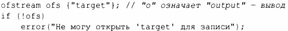
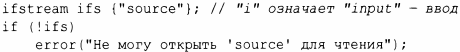

⇐10.6 Форматирование 10.8 Строковые потоки⇒
В заголовочном файле <fstream> стандартная библиотека предоставляет потоки для чтения из файла и записи в него:
Например:
Проверка того факта, что файловый поток был успешно открыт, обычно выполняется путем проверки его состояния.
В предположении, что тесты успешны, ofs можно использовать как обычный ostream (точно так же, как cout), а ifs - как обычный istream (точно так же, как cin).
Позиционирование файлов и более подробное управление способом открытия файла возможны, но выходят за рамки этой книги.
О составлении имен файлов и манипуляциях файловой системой читайте в §10.10.